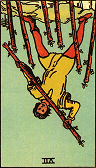

Seven of Wands (Reversed)

Luck: Energy feels unstable, with a tendency to give up more easily than usual. Persistence is weakened.
Mood: Tired, unmotivated, less defensive—lower drive to prove or protect anything.
Possible Event: I may avoid responsibilities or postpone something important, like not completing an assignment.
Luck
Mood
Possible Event